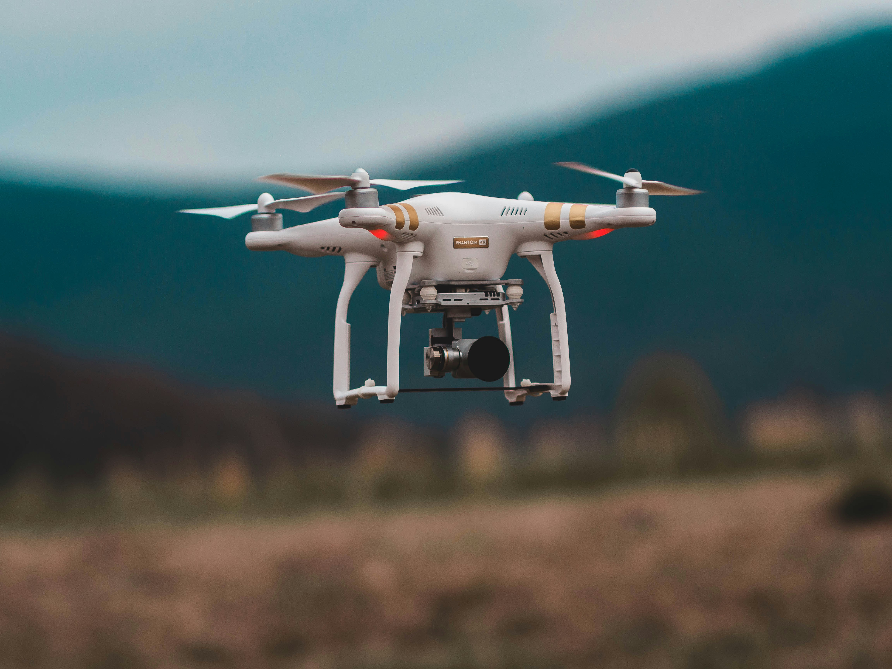
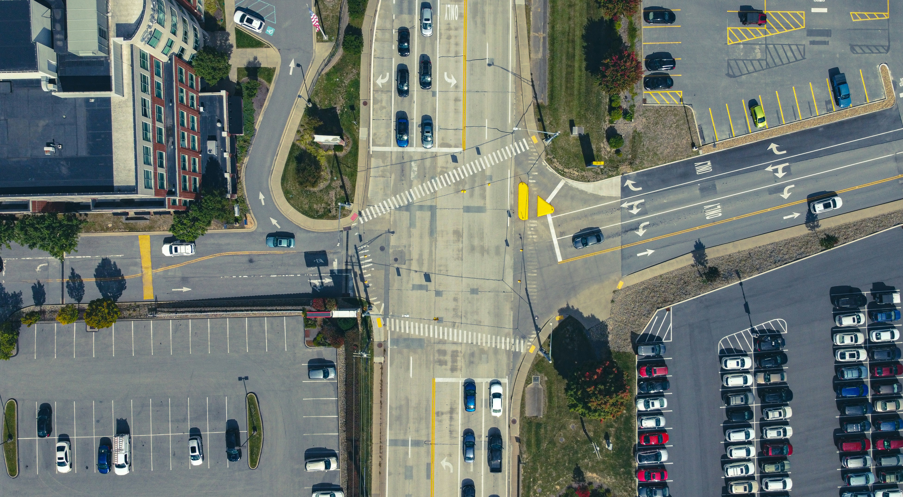
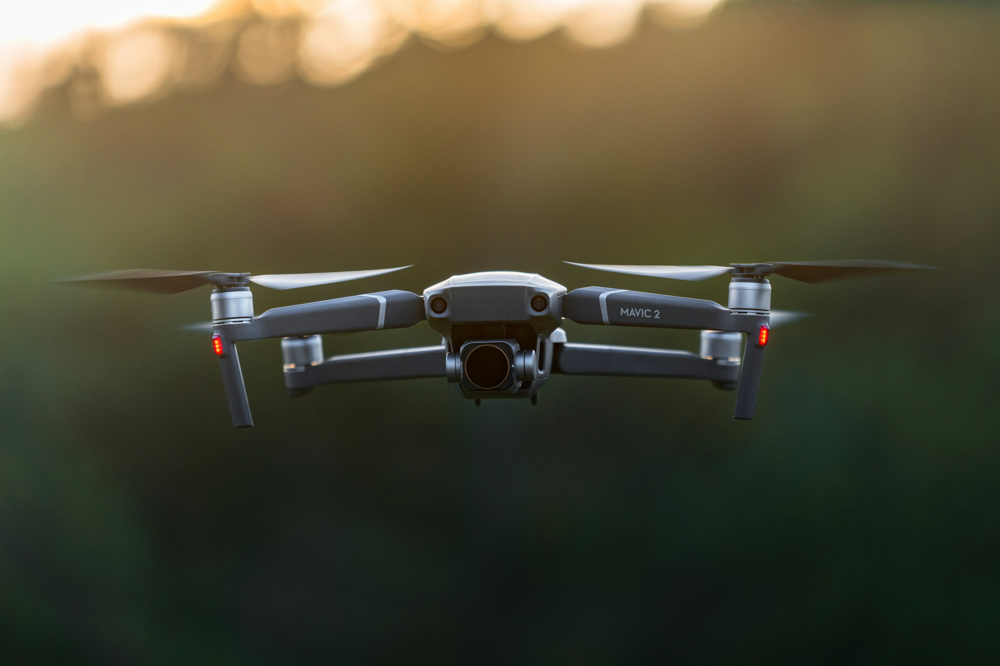
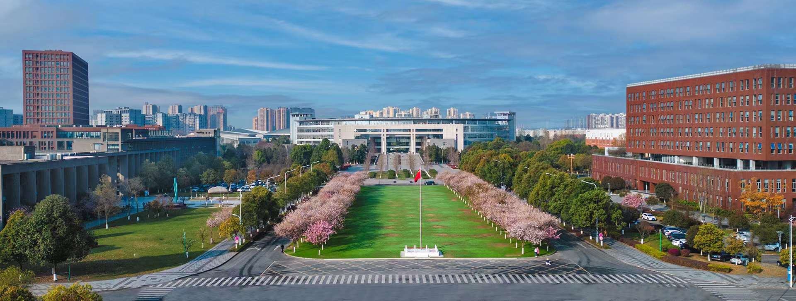
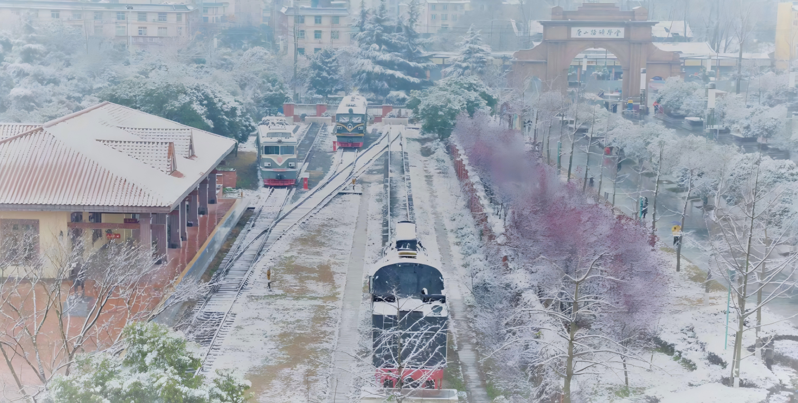

RGB · 车辆检测
RGB · 车辆检测

IR · 热成像 FUSION · 多模态
FUSION · 多模态

NIGHT · 夜间
FOG · 雨雾

TRAFFIC · 路口
RGB · 车辆检测
IR · 热成像
FUSION · 多模态
NIGHT · 夜间
FOG · 雨雾
TRAFFIC · 路口
AI驱动的智能检测技术
全天候交通场景 小目标检测
基于无人机视角的多模态融合技术，实现复杂天气条件下的高精度目标识别与追踪，为智能交通提供可靠的视觉感知解决方案。
多模态融合
RGB+红外双模态协同
实时检测
毫秒级响应速度
全天候适应
雨雾雪等复杂环境
高精度识别
小目标检测优化

FRAME 001 · RGB
OBJ: 12
FRAME 002 · IR
OBJ: 8
FRAME 003 · FUSION
OBJ: 21

FRAME 004 · NIGHT
OBJ: 5

FRAME 001 · RGB
OBJ: 12

FRAME 002 · IR
OBJ: 8

FRAME 003 · FUSION
OBJ: 21

FRAME 004 · NIGHT
OBJ: 5
RES: 1920×1080
FPS: 30
MODEL: OmniAero-v2
DETECTION PANEL
运行中
CURRENT MODEL
OmniAero-OBB v2
mAP@0.5
92.3%
TARGET CLASSES · 5类目标
RGB · 晴天场景
IR · 复杂天气
公交车
BUS
小轿车
CAR
货运车
FREIGHT
卡车
TRUCK
面包车
VAN
实时更新 · 延迟 <50ms
FPS: 47
|
GPU: 63%
核心技术
先进的AI算法与多模态融合技术
深度学习模型
采用改进的YOLO架构，针对小目标检测进行专门优化，提升检测精度与召回率。
多模态数据融合
融合可见光与红外图像，互补优势，在雨雾等恶劣天气下保持稳定性能。
智能场景适应
自动识别天气与光照条件，动态调整检测策略，确保全天候稳定运行。
边缘计算优化
模型轻量化设计，支持无人机端侧部署，实现低延迟实时处理。
可视化分析
实时数据统计与可视化展示，支持历史回溯与轨迹分析。
API接口
提供RESTful API，方便集成到现有交通管理系统中。
模型展示
多种检测模型性能对比与可视化展示
MODEL BENCHMARK · OmniAero-OBB v2
| 模型 | mAP@0.5 | mAP@0.5:0.95 | FPS | 参数量 | 全天候 |
|---|---|---|---|---|---|
|
OURS
OmniAero-OBB
|
92.3% | 68.7% | 47 | 28.6M | ✓ |
| YOLOv8-OBB | 87.1% | 61.4% | 52 | 43.7M | ✗ |
| RT-DETR | 85.6% | 59.2% | 38 | 67.0M | ✗ |
| FasterRCNN | 80.3% | 54.1% | 18 | 41.4M | ✗ |
INTERACTIVE BENCHMARK · 指标对比可视化
mAP@0.5
目标检测平均精度（IoU=0.5）
0
92.3%
mAP@0.5
目标检测精度
47 FPS
实时推理速度
RTX 3080 测试
28.6M
模型参数量
轻量化设计
5类
支持目标类别
车辆·行人·非机动车等